The Editor
Invoking the Editor
The editor may be invoked in several ways. From the session, you can use the system command )ED or the system function ⎕ED, specifying the names(s) of the object(s) to be edited. You can also type the name of the object and then press Shift+Enter (ED), click the Edit tool on the tool bar, or select Edit from the Action menu. If you invoke the editor when the cursor is positioned on the empty input line, with a suspended function in the state indicator, the editor is invoked on the suspended function and the cursor is positioned on the line at which it is suspended. This is termed naked edit. These ways of invoking the editor apply only in the session window
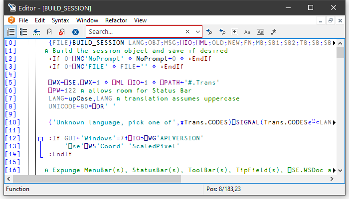
In addition, there is a general point-and-edit facility that works in edit and trace windows too. Position the input cursor over a name and double-click the left mouse button. Alternatively, you can press Shift+Enter or select Edit from the File menu. The name can appear in the Session, in an Edit window, or in a Trace window; the effect is the same. In the Session, typing a name and pressing Shift+Enter is a special case of point-and-edit. A naked edit can be invoked by double-clicking the left mouse button in the empty input line.
The type of a new object defaults to function/operator unless the object is shadowed, in which case it defaults to a variable (vector of character vectors). You can however specify the type of a new object explicitly using )ED or ⎕ED. For example, typing ")ED ∊LIST -MAT" in a CLEAR WS would create Edit windows for a vector of character vectors named LIST and a character matrix called MAT. See )ED or ⎕ED for details.
If the name is not already being edited, it is assigned a new edit window. If you edit a name which is already being edited, the system focuses on the existing edit window rather than opening a new one. Edit windows are displayed using the colour combination associated with the type of the object being edited.
If the name is followed by a line-number in square brackets, for example, MyFn[1000], the Editor will position the cursor on the specified line. This applies to all methods of invoking the Editor, except ⎕ED. There must not be a space between the last character of the name and the "[".
Window Management (Standard)
Unless Classic Dyalog mode is selected from the Layout menu, the Editor is a Multiple Document Interface (MDI) window that may be a stand-alone window, or be docked in the Session window. Each of the objects being edited is displayed in a separate sub-window. Individual edit windows are managed using standard MDI facilities.
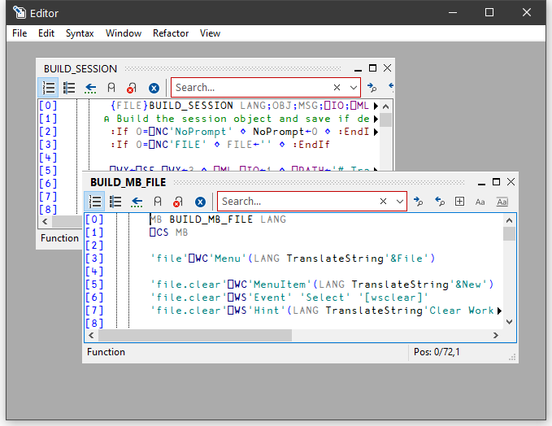
The first edit sub-window window is created at the position specified by the edit_first_y and edit_first_x parameters which are specified in terms of the size of a character in the current font relative to the top-left corner of the main Editor window. Subsequent ones are staggered according to the values of the edit_offset_y and edit_offset_x parameters.
The initial size of an edit window is specified by the edit_rows and edit_cols parameters.
The blue triangles indicate that the line of text is longer than can be displayed in the current Edit window.
By default, the Session has the Editor docked along the right edge of the Session window. When you edit a function, the Editor window automatically springs into view as illustrated below.
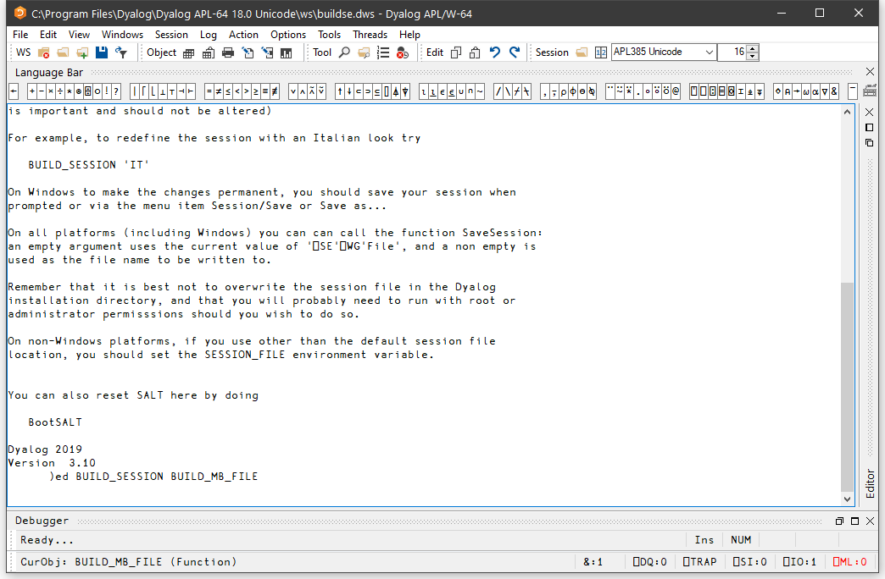
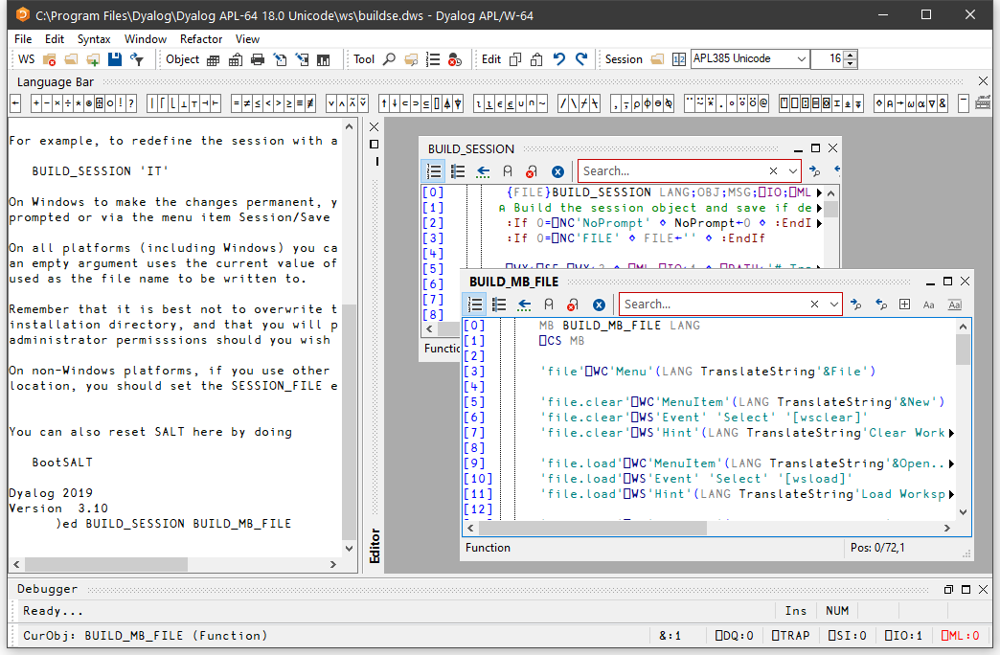
You can resize the Editor pane to view more or less of the Session itself, by dragging its title bar.
Using the buttons in the title bar, you can instantly maximise the Editor pane to allow you to concentrate on editing, or minimise it to reveal the entire Session. In either case, the restore button quickly restores the 2-pane layout.
The picture below shows the effect of maximising the Editor. The BUILD_SESSION edit window is itself maximised within the Editor too.
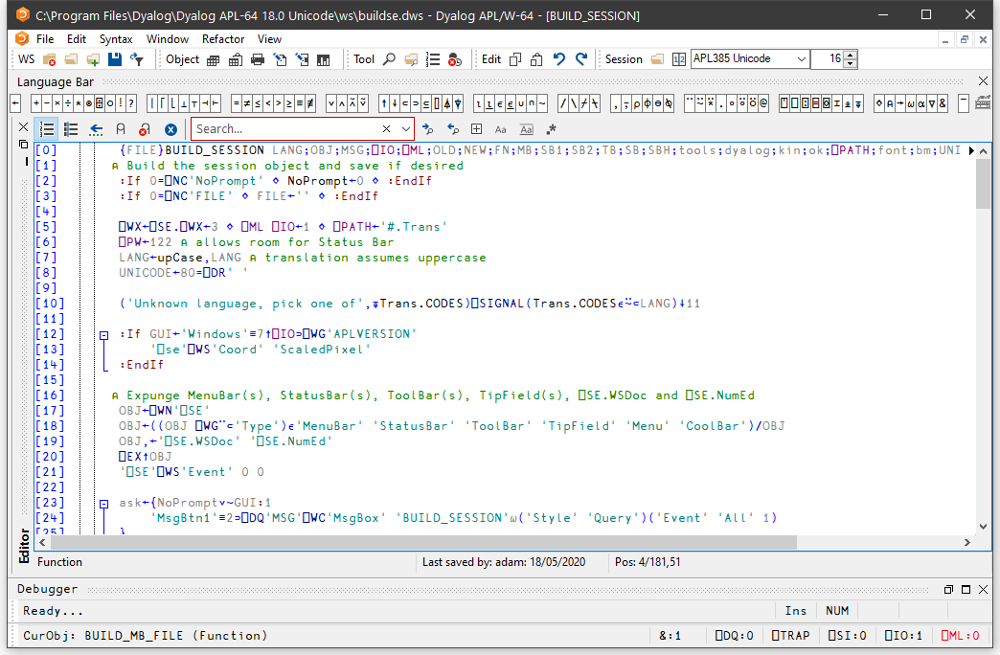
When the Editor has the focus, the Editor menubar is displayed in place of the Session menubar.
Window Management (Classic Dyalog mode)
If Classic Dyalog mode is selected from the Layout menu, each Edit window is a top-level window created as a child of the Session window. This means that normally Edit windows appear on top of the Session.
The first Edit window is created at the position specified by the edit_first_y and edit_first_x parameters, which are specified in terms of the size of a character in the current font relative to the top-left corner of the screen.
The initial size of an edit window is specified by the edit_rows and edit_cols parameters.
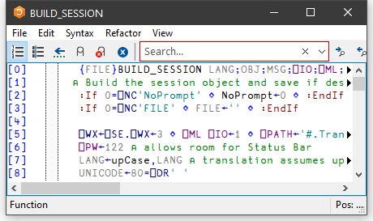
Subsequent ones are staggered according to the values of the edit_offset_y and edit_offset_x parameters.
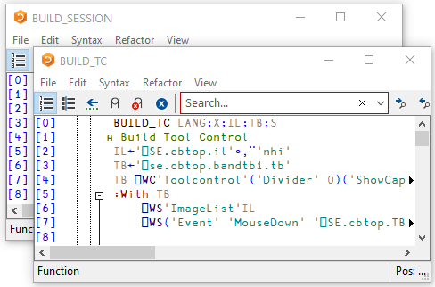
Moving around an edit window
You can move around in the edit window using the scrollbar, the cursor keys, and the PgUp and PgDn keys. In addition, Ctrl+Home (UL) moves the cursor to the beginning of the top-line in the object and Ctrl+End moves the cursor to the end of the last line in the object. Home (LL) and End (RL) move the cursor to the beginning and end respectively of the content on the line containing the cursor. That is, if a line of text starts or ends with multiple spaces, Home (LL) and End (RL) move the cursor to the left/right end of the text respectively, ignoring the multiple spaces. Repeating the keystroke will move to the limit of the line, including the spaces.
Closing an edit window
Closing an edit window from its System Menu has the same effect as choosing Exit from the File Menu; namely that it fixes the object in the workspace and then closes the edit window.
Minimising an edit window
Minimising an edit window causes it to be displayed as a Dyalog Edit icon, with the name of the object underneath. The edit window can be restored in the normal way, or by an attempt to re-edit the same name.
Selecting Text
You may select text in an Editor window by clicking the left or right mouse button over any character, dragging out a highlighed area, and then releasing the mouse button. When using the left button, moving up or down one line extends the selection from the beginning of that line, so the selection may be ragged. The right button selects a rectangular box.
Editor ToolBar
The buttons on the Editor toolbar vary according to what you are editing:
Array
Function or operator
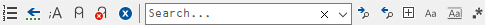
Class or namespace script
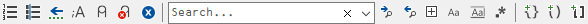
| Button | Description |
|---|---|
| Toggle line numbers | Toggles Line numbers on/off |
| Toggle tree view | Toggles the treeview on/off. See Editing Classes . |
| Edit in Array Notation | Switches Editor to Array Notation syntax if possible. |
| Previous Location | Certain operations (such as selecting an item in the treeview) reposition the caret in the Editor window. This button moves the caret back to its previous location. |
| Comment selected text | Inserts a comment symbol to the left of the selection in each of the selected lines. |
| Uncomment selected text | Removes the comment symbol (if present) from the left-most column of the selection in each of the selected lines. |
| Save changes and return | Saves changes and closes the current edit window |
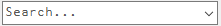 Search Box |
Enter search text and click one of the following two buttons |
| Search for Next Match | Locates the next occurrence of the search text |
| Search for Previous Match | Locates the previous occurrence of the search |
| Search hidden text | Determines whether or not the search examines collapsed blocks |
| Match case | Specifies whether or not the search is case-sensitive |
| Match whole word | Specifies whether or not the search matches a whole word |
| 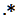 Use Regular Expressions |
Specifies whether or not the search uses PCRE regular expressions |
| 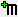 Refactor text as method |
Inserts a Method template for the selected name |
| Refactor text as field | Inserts a Field template for the selected name |
| Refactor text as property | Inserts a Property template for the selected name |
The File Menu
The File menu is displayed when editing a simple object and provides the following options.
| Item | Description |
|---|---|
| Fix | Fixes the object in the workspace, but leaves the edit window open. Edit history is also preserved. If the data has changed and the confirm_fix parameter is set, you will be prompted to confirm. |
| Fix whole script | (Disabled unless editing a script) |
| Open File | Allows you to edit a Dyalog script file or an arbitrary text file. |
| Save | Saves the file being edited. |
| Save As | Renames and saves the file being edited. |
| Always ask on close | Toggles the value of the confirm_fix parameter. |
| Edit | Opens an Edit window on the name under the cursor (Disabled when there is no such name). |
| Prints the current contents of the edit window | |
| Print Setup | Displays the Print Configuration dialog box |
| Properties | Displays the Object Properties dialog box for the current object |
| Exit (and Fix) | Fixes the object in the workspace and closes the edit window. If the data has changed and the confirm_exit parameter is set, you will be prompted to confirm |
| Exit (and fix script) | (Disabled unless editing a script) |
| Exit and discard changes | Closes the edit window, but does not fix the object in the workspace. If the data has changed and the confirm_abort parameter is set, you will be prompted to confirm. |
The File Menu (editing a script)
When a script is being edited, the File menu shows these items:
| Fix whole script | Fixes the entire script |
| Fix only functions | Fixes only the functions in the script. |
| Exit and fix whole script | Fixes the entire script, and exits the Editor. |
| Exit and fix only functions | Fixes only the functions in the script and exits the Editor. |
Editing Scripts
Suppose that you have a Class that manages a list of items in a shared Field, so somewhere in the script would appear a line such as:-
:Field shared public List←⍬You run your application for a bit, and List, which was initially empty, gets updated as new instances of the Class are created. You then edit the Class to add a new function, or fix a bug. In this instance, when you exit the editor you may not want List to be reset back to the empty vector although you do want the new version of the function(s) in the Class to be fixed.
Nevertheless whenever you edit the Class when it is not suspended, you probably always want the entire script to be re-fixed, and List re-initialised.
The options in the File menu shown above provide for these alternatives.
In addition, the Configuration Dialog (see Fixing Scripts) allows you to define the behaviour of the keystrokes
The Edit Menu
The Edit menu provides a means to execute those commands that are concerned with editing text. The Edit menu and the actions it provides are described below.
| Item | Description |
|---|---|
| Reformat | Reformats the function body in the edit window, indenting control structures as appropriate. |
| Reformat Scripts Automatically | If checked, the Editor will automatically reformat a Dyalog script when it loads it. |
| Undo | Undoes the last change made to the object. Repeated use of this command sequentially undoes each change made since the edit window was opened. |
| Redo | Re-applies the previous undone change. Repeated use of this command sequentially restores every undone change. |
| Select All | Selects and highlights the entire contents of the Edit window. |
| Cut | Copies the selected text to the clipboard and removes it from the object. |
| Copy | Copies the selected text to the clipboard. |
| Paste | Copies the text in the clipboard into the object at the current location of the input cursor. |
| Paste Unicode | Same as Paste , but gets the Unicode text from the clipboard and converts to ⎕AV |
| Paste Non-Unicode | Same as Paste , but gets the ANSI text from the clipboard and converts to ⎕AV . |
| Clear | Deletes the selection or the character under the cursor. Has no effect on the clipboard |
| Open Line | Inserts a blank line immediately below the current one. |
| Delete Line | Deletes the current line. |
| Goto Line | Prompts for a line number, then positions the cursor on that line. |
| Find | Displays the Find dialog box. |
| Replace | Displays the Replace dialog box. |
| Highlight All Matches | If checked, all strings in the object being edited that match the search string are highlighted. The highlightedted items change dynamically as the search string is entered or changed. |
| Comment selected lines | Adds a comment symbol to the beginning of all selected lines. |
| Uncomment selected lines | Removes a comment symbol from the beginning of all selected lines. |
| Toggle Local name | Adds or removes the name under the cursor to/from the function header line. |
The Find and Replace items are used to display the Find dialog box and the Find/Replace dialog box respectively. These boxes are used to perform search and replace operations and are described later in this Chapter.
Once displayed, each of the two dialog boxes remains on the screen until it is either closed or replaced by the other. This is convenient if the same operations are to be performed over and over again, and/or in several windows. Find and Find/Replace operations are effective in the window that previously had the focus.
The Syntax Menu
The Syntax menu provides options related to the display of data in the Edit window. The initial items are concerned with syntax colouring; for workspace objects, the default is APL for functions and operators, and Nothing for variables. The final item toggles how arrays are displayed in the Editor.
| Item |
|---|
| Nothing |
| Colour as APL |
| Colour as JSON |
| Colour as XML |
| Show as Array Notation |
The Window Menu
The Window menu provides a means to control the display of the various edit windows. The Window menu and the actions it provides are described below.
| Item | Description |
|---|---|
| Close All Windows | Closes all the edit windows. If Confirm on Edit Window Closed is checked, you will be prompted to confirm for any objects that you have changed. |
| Cascade | Arranges the edit windows in overlapping fashion. |
| Tile Vertically | Arranges the edit windows tiled one above the other. |
| Tile Horizontally | Arranges the edit windows tiled alongside one another. |
| Arrange Icons | Arranges any minimised edit windows. |
| Editor | Allows you to Select the edit window corresponding to the named object. |
The Refactor Menu
The Refactor menu appears only when editing a Class and provides the following options. In each case, you must highlight a name in the Edit window, and then select one of these options to insert the appropriate template for that name into the body of the Class.
| Item | Description |
|---|---|
| Add text as Field | Inserts a Field template for the selected name. |
| Add text as Property | Inserts a Property template for the selected name. |
| Add text as Method | Inserts a Method template for the selected text name. |
The View Menu
The View menu provides the following actions.
| Item | Description |
|---|---|
| Trace | Displays a column to the left of the function that displays ⎕TRACE settings |
| Stop | Displays a column to the left of the function that displays ⎕STOP settings |
| Monitor | Displays a column to the left of the function that displays ⎕MONITOR settings |
| Line Numbers | Toggles the display of line numbers on/off. |
| Function Line Numbers | Toggles the display of line numbers on individual functions on/off. This option is only enabled when editing a Class, Namespace script or Interface. |
| Tree View | Toggles the display of the treeview in the left-hand pane. |
| Compiler Errors | If enabled, the Editor identifies which lines of code would not compile. These are identified by a red vertical line to the left. Hovering over the red bar gives you a pop-up telling you what the compiler didn't like about that line of the function. |
| Outlining | Turns outlining on and off. |
| Expand All Outlines | Expands all outlines. |
| Collapse All Outlines | Collapses all outlines |
| Expand all Outlines below here | Expands all outlines below the level of the current line. |
Function Line Numbers
The Function Line Numbers option in the Editor menu provides an additional level of line-numbering. If selected, line numbers are displayed independently on each individual function (or operator) in the Class. This option is only enabled when you are editing a Class, Namespace script or Interface, and is disabled for all other types of object.
Function line-numbering and general line-numbering are independent options and it is possible to have the entire Class numbered (from [0] to the number of lines in the Class) in addition to having line-numbering on each individual function.
Using the Editor
Creating a New Function
Type the name of your function and invoke the editor. To do this you may press Shift+Enter, or select Edit from the Action menu, or double-click the left button on your mouse, or click the Edit tool in the tool bar. A new window will appear on the screen with the name you have chosen displayed in the top border. The name is also inserted in the function header and the cursor positioned to the right. The new window is automatically given the input focus.
Line-Numbers on/off
Try changing the line numbers setting by clicking on the Line Numbers option in the Options menu. Line-numbering on/off is effective for all edit windows.
Adding Lines
If the keyboard is in Insert mode, pressing Enter at the end of a line opens you a new blank line under the current one and positions the cursor there ready for input. You can also open a new blank line by pressing Ctrl+Shift+Insert (OP).
If the cursor is at the end of the last line in the function, pressing Enter adds another line even if the keyboard is in Replace mode.
Indenting Text
Dyalog allows you to insert leading spaces in lines of a function and (unless the AutoFormat parameter is set) preserves these spaces between editing sessions. Embedded spaces are however discarded. You can enter spaces using the space bar or the Tab key. Pressing Tab inserts spaces up to the next tab stop corresponding to the value of the TabStops parameter. If the AutoIndent parameter is set, new lines are automatically indented the same amount as the preceding line.
Reformatting
The RD command (which by default is mapped to Keypad-Slash) reformats a function according to your AutoFormat and TabStops settings. See Trace/Edit Tab.
Deleting Lines
To delete a block of lines, select them by dragging the mouse or using the keyboard and then press Delete or select Clear from the Edit menu. A quick way to delete the current line without selecting it first is to press Ctrl+Delete (DK) or select Delete Line from the Edit menu.
Copying Lines
Select the lines you wish to copy by dragging the mouse or using the keyboard. Then press Ctrl+Insert or select Copy from the Edit menu. This action copies the selection to the clipboard. Now position the input cursor where you wish to make the copy and press Shift+Insert, or select Paste from the Edit menu. You can also use this method to duplicate a ragged block of text.
To copy text using drag-and-drop editing:
- Select the text you want to move.
- Hold down the Ctrl key, point to the selected text and then press and hold down the left mouse button. When the drag-and-drop pointer appears, drag the cursor to a new location.
- Release the mouse button to drop the text into place.
Moving Lines
Select the lines you wish to copy by dragging the mouse or using the keyboard. Then press Shift+Delete or select Cut from the Edit menu. This action copies the selection to the clipboard and removes it. Now position the input cursor at the new location and press Shift+Insert, or select Paste from the Edit menu. You can also use this method to move a ragged block of text.
To move text using drag-and-drop editing:
- Select the text you want to move.
- Point to the selected text and then press and hold down the left mouse button. When the drag-and-drop pointer appears, drag the cursor to a new location.
- Release the mouse button to drop the text into place.
Joining and Splitting Lines
To join a line to the previous one: select Insert mode; position the cursor on the first character in the line; press Bksp.
To split a line: select Insert mode; position the cursor at the place you want it split; press Return.
Toggling Localisation
The TL command (which by default is mapped to Ctrl+Up) toggles the localisation of the name under the cursor. If the name is currently global, pressing Ctrl+Up causes the name to be added to the list of locals in the function header. If the name is already localised, pressing Ctrl+Alt+l removes it from the header.
Matching Occurences
When you position the caret over a name, control word, or simple text or to the right of a parenthesis, bracket, or brace, matching occurrences are identified (by a thin box). In particular :
- matching occurrences of the word under the caret (except the actual instance under the caret)
- matching parentheses, brackets and braces
- all control words associated with the one under the caret. For example, if the caret is on
:If, then nested:AndIf,:OrIf,:Elseand the final:Endifare identified.
Aligning Comments
When you press the
- Comment symbols that are preceded only by white space, that is, comments in lines that contain no code, are ignored and are not adjusted in any way.
- Comment symbols that lie between the first column and the first tab stop will remain in or be moved to the first column. For information on setting tab stops, see Dyalog for Microsoft Windows Installation and Configuration Reference Guide: Configuration Dialog (Edit/Trace Tab).
- Comment symbols will not move further left than the end of the statement.
When a comment is re-aligned, text to the right of the left-most comment symbol (including spaces and other comment symbols) will remain fixed in relation to that symbol.
There is no keystroke associated with this command by default; you must define one. See Dyalog for Microsoft Windows Installation and Configuration Reference Guide: Configuration Dialog (Keyboard Shortcuts Tab).
Stop, Trace and Monitor Controls
If any of the Stop, Trace, and Monitor options of the View menu are set, the Editor displays an area to the left of the function body containing up to 3 columns. If a function line is enabled by ⎕TRACE,⎕STOP or ⎕MONITOR the corresponding column displays a yellow circle (trace), red circle (stop) or clock symbol (monitor).
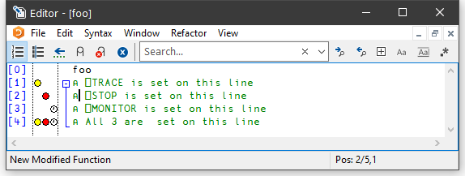
When you move the mouse-pointer over this area, the pointer displays the appropriate symbol and you can toggle the corresponding setting on and off by clicking the mouse.
White Space in Source Code
Settings that impact the automatic reformatting of code can cause changes to whitespace – this can be interpreted as changes to the source code. This means that:
- opening a scripted object in the Edit window can cause the source of that object to change (when closing an Edit window, you might be prompted to save a function even though you have not made any changes to it).
- viewing an object can change its file timestamp; source code management systems can subsequently report changes due to the changed file timestamp.
- source code changes resulting from reformatting will be evident in the results of system functions such as
⎕AT,⎕SRC,⎕CR,⎕VRand⎕NR.
Outlining
When you are editing a function, outlining identifies the blocks of code within control structures, and allows you to collapse and expand these blocks so that you can focus your attention on particular parts of the code
The picture below shows the result of opening the function ⎕SE.cbtop.TB_POPUP.
)ED ⎕SE.cbtop.TB_POPUP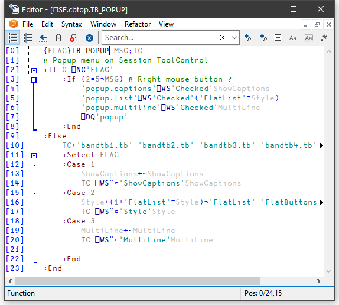
The various control structure blocks are delineated by a treeview diagram.
- When you hover the mouse pointer over one of the boxes that mark the start of a block, the line marking the extent of that block becomes highlighted, as shown above.
- If you click on a box, the corresponding section collapses, so that only the first line of the block is displayed, as shown below.
- If you click on a box, the corresponding section is expanded.
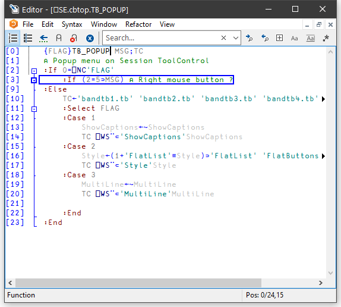
Sections
Functions and scripted objects (classes, namespaces etc.) can be subdivided into Sections with :Section and :EndSection statements. Both statements may be followed by an optional and arbitrary name or description. The purpose is to split the function up into sections that you can open and close in the Editor, thereby aiding readability and code management. Sections have no effect on the execution of the code, but must follow the nesting rules of other control structures.
The following picture illustrates the use of sections in a function called DumpWindow. The function is divided into 5 sections named Comments, Init, NAs, MakeBitmap and CopyToClipBoard.
The first picture shows the function with all sections closed.
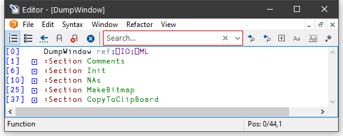
The next picture shows the effect of opening the Comments section. Notice how this is delineated by the statements:
:Section Comments
...
:EndSection Comments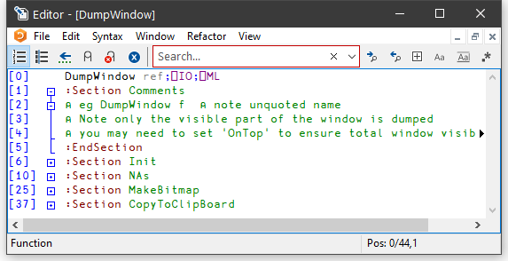
And with the Init section opened too:
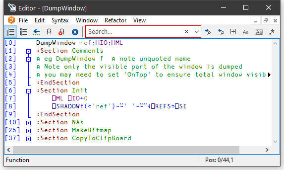
Finally, with all the sections opened:
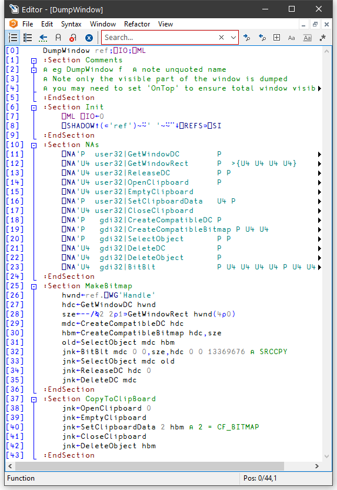
Array Notation
The Editor allows you to edit arbitrary arrays using array notation.
Any of the following invokes it:
- Within the Editor, invoke the Edit command (<ED>) when the cursor is not over any name.
- In the session, call the system command
)EDand prefix the variable name with a diamond character, for example,)ED ⋄foo. - In the session, call the system function
⎕EDwith a left argument'⋄', for example,'⋄' ⎕ED 'foo'. - In the Object toolbar, click the button when the cursor is over the name of an array. This opens the array in the Editor in the same way as
)ED ⋄foo. - In the Editor’s toolbar, click the button. This toggles whether the Editor contents are displayed using array notation.
- From the Editor’s Syntax menu select Show as Array Notation.
The Editor presents the array for you to edit in array notation.
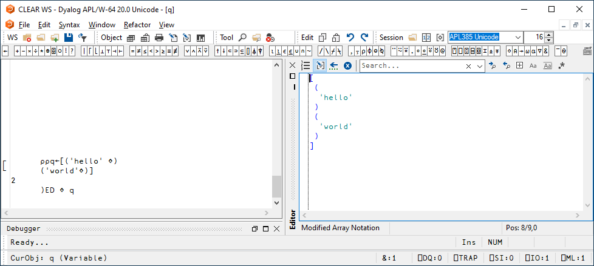
When using array notation in the Editor, the Reformat command (<RD>) evaluates the content and regenerates it using array notation.
You can include APL expressions: the Editor will evaluate them when you fix or format the array. This allows you to insert the value of one array into another by typing its name and pressing <RD>.
For example, in the session:
x←[
(
'HELLO'
)
(
'WORLD'
)
]
)ED ⋄ x⎕C:
⎕C[
(
'HELLO'
)
(
'WORLD'
)
][
(
'hello'
)
(
'world'
)
] x
┌─────┐
│hello│
├─────┤
│world│
└─────┘Editing Classes
The picture below shows the result of opening the ComponentFile class. Notice how each function is delineated separately and that each function is individually line-numbered.
)ED ComponentFile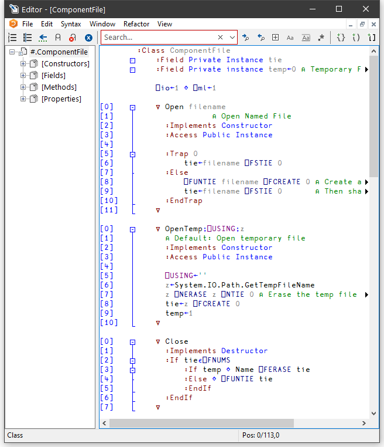
The outlining feature really comes into its own when editing classes because you can collapse and expand whole functions. The picture below shows the effect of collapsing all but the Append method.
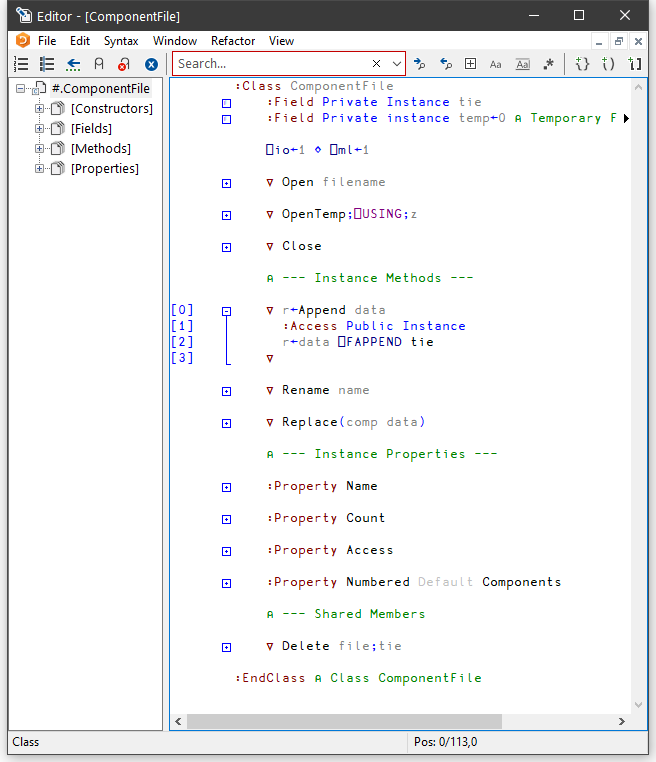
When you edit a class, a separate treeview is optionally displayed in the left pane to make it easy to navigate within the class. When you click on a name in the treeview, the editor automatically scrolls the appropriate section into view (if necessary) and positions the edit cursor at its start. The picture below illustrates the result of opening the [Methods] section and then clicking on Rename.
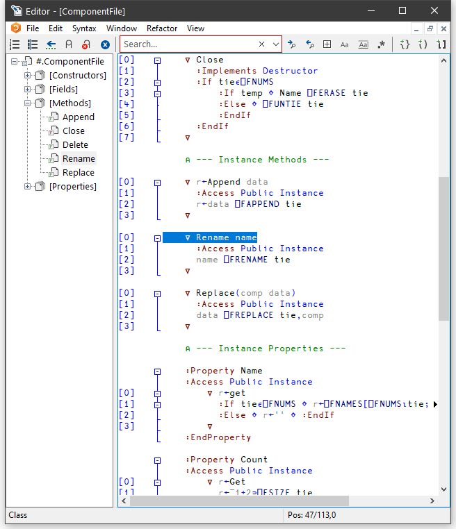
Sections within Scripts
Scripts can also be subdivided into Sections using :Section and :EndSection statements. As with single functions, the purpose is only to split the script up into sections that you can open and close in the Editor. Sections have no effect on the execution of the code.
The following picture illustrates a Class named actuarial which, for editing purposes, has been sub-divided into five separate Sections named Main, MenuHandlers, Validation, Utilities and OldCode. In this picture, all the Sections are closed.
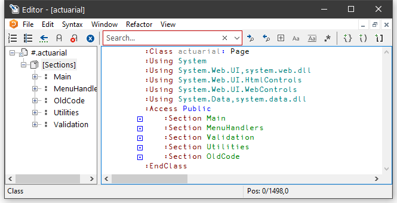
The next picture shows the effect of opening just the Main section.
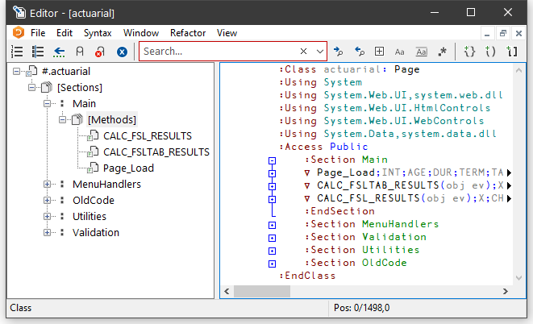
This section is delimited by the two statements:
:Section Main
...
:EndSection MainIn this picture the 3 functions within the Main section are temporarily closed.
Similarly, the section called Validation is delimited by:
:Section Validation
...
:EndSection Validation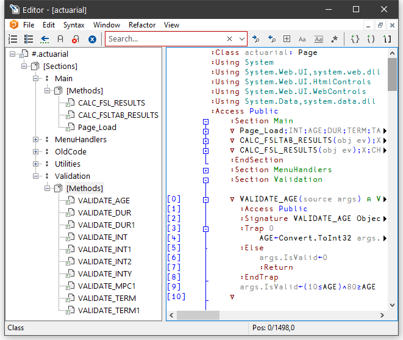
Find and Replace Dialogs
The Find and Find/Replace dialog boxes are used to locate and modify text in an Edit window.
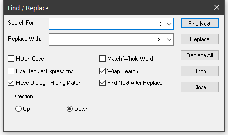
| Search For | Enter the text string that you want to find. The text from the last 10 searches is available from the drop-down list. If appropriate, the search text is copied from the Find Objects tool. This makes it easy to first search for functions containing a particular string, and then to locate the same string in the functions. |
| Replace With | Enter the text string that you want to use as a replacement. The text from the last 10 replacements is available from the drop-down list. |
| Match Case | Check this box if you want the search to be case-sensitive. |
| Match Whole Word | Check this box if you want the search to only match only whole words. |
| Use Regular Expressions | Check this box if you want to use Regular Expressions. |
| Move Dialog if Hiding Match | If checked, the Find or Find/Replace dialog box will automatically position itself so as not to obscure a matched search string in the edit window. |
| Find Next After Replace | If checked, following a replace operation, the selection will move to the next occurrence of the target string in the edit window. |
| Direction | Select Up or Down to control the direction of search. |
Using Find and Replace
Find and Replace work on the concept of a current search string and a current replace string which are entered using the Find and Find/Replace Dialog boxes. These boxes also contain buttons for performing search/replace operations.
Suppose that you want to search through a function for references to the string "Adam". It is probably best to work from the start of the function, so first position the cursor there (by pressing Ctrl+Home). Then select Find from the Edit menu. The Find Dialog box will appear on your screen with the input cursor positioned in the edit box awaiting your input. Type "Adam" and click the Find Next button (or press Return), and the cursor will locate the first occurrence. Clicking Find Next again will locate the second occurrence. You can change the direction of the search by selecting Up instead of Down. You could search another function for "Adam" by opening a new Edit window for it and clicking Find Next. You do not have to redefine the search string.
Now let us suppose that you wish to replace all occurrences of "Adam" with "Amanda". First select Replace from the Edit menu. This will cause the Find Dialog box to be replaced by the Find/Replace Dialog box. Enter the string "Amanda" into the box labelled Replace With, then click Replace All. All occurrences of "Adam" in the current Edit window are changed to "Amanda". To repeat the same global change in another function, simply open an edit window and click Replace All again. If instead you only want to change particular instances of "Adam" to "Amanda" you may use Find Next to locate the ones you want, and then Replace to make each individual alteration.
Text searches are performed using PCRE. If the Use Regular Expressions box is checked, the full range of regular expressions provided by PCRE are available for use. See PCRE Regular Expression Syntax Summary.
Saving and Quitting
To save the function and terminate the edit, press Esc (EP) or select Exit from the File menu. The new version of the function replaces the previous one (if any) and the edit window is destroyed.
Alternatively, you can select Fix from the File menu. This fixes the new version of the function in the workspace, but leaves the edit window open. The history is also retained, so you can subsequently undo some changes and fix the function again.
To abandon the edit, press Shift+Esc (QT) or select Abort from the File menu. This destroys the edit window but does not fix the function. The previous version (if any) is unchanged.
Editing Scripts and Text Files
The Editor may also be used to edit Dyalog script files (.dyalog files) and general text files.
There are two ways to choose the file to be edited. If the file exists, you can select it from the Open source file dialog by clicking File/Edit Text File from the Session menu bar.
Alternatively, type )ED followed by the pathname to the file. To identify the name given as a file, it must either contain a slash character ("\" or "/") or be preceded by one.
Examples
)ED c:\myfiles\myscript.dyalog
)ED c:\myfiles\pete.txt
)ED \x.txt ⍝ x.txt in current directory
)ED / x.txt ⍝ dittoIf the named file does not exist, you will be asked whether or not you want to create it:
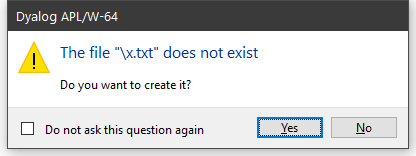
If you edit a Dyalog script file, the editor will treat it as such and provide the same formatting and syntax colouring as if it were a script in the workspace.
Otherwise, the file will be edited as if it were a character vector with embedded new-lines.
When you exit the editor with Exit and fix, you will be offered a number of alternatives depending upon the type of file, as shown below.
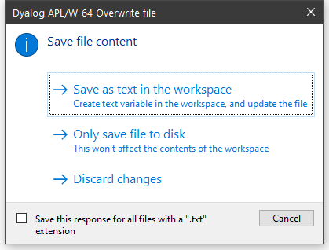
Saving a Text file
If you choose Save as text in the workspace, information about the file and the text variable associated with it is retained in the workspace. This information may be obtained using 5176⌶ and 5177⌶. See List Loaded Files and List Loaded File Objects.
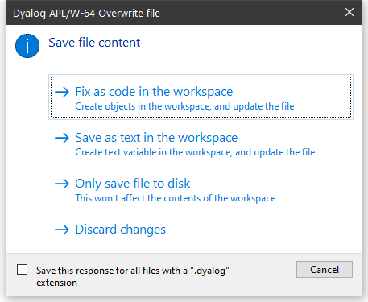
Saving a Script file
If you choose Fix as code in the workspace or Save as text in the workspace, information about the file and the text variable associated with it is retained in the workspace. This information may be obtained using 5176⌶ and 5177⌶. See List Loaded Files and List Loaded File Objects.
Fix as code in the workspace
If you choose this option, the file will be updated and the script will also be fixed in the workspace. If the script refers to a base class or other external elements, it cannot be fixed unless these elements are also present in the workspace.
Save as text in the workspace
If you choose this option, the file will be updated and the contents of the file will also be saved to a variable in the workspace. First you will see the following warning dialog, which may be disabled subsequently by checking Do not ask this question again.
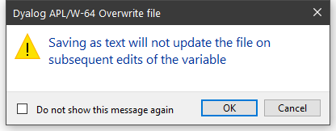
Then you will be prompted to supply its name, which may be a new name or the name of an existing variable:
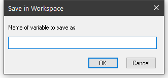
Only save file to disk
If you choose this option, the file will be updated but nothing will be changed in the workspace.
Discard changes
If you choose this option, all changes will be discarded and nothing saved.
Source as Typed
Historical Introduction
When an object containing executable code such as a function, operator, class, or namespace is defined in a workspace either by an editor or by the system function ⎕FX, the object is tokenised into an internal form. Historically, this was the only form of the object, and both the editor and system functions like ⎕CR, ⎕VR, ⎕NR reconstitute the source code from the internal form. This reconstituted source lacks extraneous white space and the precise numerical formatting that the user originally entered, for example.
When classes and scripted namespaces were introduced, the source code was stored in text form for these objects, as it was typed, in addition to the tokens which were still used at runtime. The function ⎕SRC was added to return this text, and a new function ⎕FIX was added to define objects that also have source code.
Subsequently, ⎕FIX was extended to allow the definition of functions and operators which include source code, as well as the use of source files outside the workspace to store the source code of an object. However, unless a function or operator was defined using an external file, the editor continued to only store the tokenised form in the workspace, in order to save space.
Current Behaviour
From version 19.0 onwards, the default is that the editor stores source code as it was typed in by the user for all objects, in addition to the tokenised form. When an object is defined from an external source file using ⎕FIX, a copy of the source is also retained in the workspace.
In order to maintain backwards compatibility with applications that rely on the canonical representation returned by ⎕CR, ⎕VR , ⎕NR, these functions continue to reconstitute the source from tokens; and ⎕FX continues to only store the tokenised form. If you wish to access the source as typed, you should use ⎕SRC, or 60 ⎕ATX, and you should use ⎕FIX, to define not only namespaces and classes but functions and operators as well.
When the user opens an object in the Editor, the saved source code is presented if it exists. If the object was defined from a file and the source held in the workspace differs from the contents of the file, the user will be asked to decide whether to use the file or break the link and use the source in the workspace. If no source code is available, it is reconstituted from the internal form.
There is, however, no mechanism to reconstitute a script, as a whole, from its tokenised form. If there is no source code, the Namespace or Class appears as if it were created using ⎕NS rather than having originated from a script. It cannot be opened in the Editor and the result of ⎕SRC is empty. However, the source code for individual functions and operators within the Namespace or Class will be reconstituted from their individual tokenised code when required.
The functions ⎕SRC and 62 ⎕ATX (most precise available source) use the same logic as described above to generate a result.
Source code saved in the workspace is compressed to minimise space usage.
The white space in comment statements is retained in both the compiled form and compiled form of a function.
The Boolean parameter DYALOG_DISCARD_FN_SOURCE (default 0) and 5172⌶ (Discard Source Information) allow the user to enable or disable this feature for functions and operators. The AutoFormat Functions option is automatically disabled if the DYALOG_DISCARD_FN_SOURCE parameter is 1. You can format code on demand.
5171⌶ (Discard Source Information) discards source code and file information for scripted objects, namespaces, classes, functions, and operators that is saved in the workspace.
To ensure that they can be used by Classic Edition, the source code has been discarded from all the workspaces supplied by Dyalog as part of the distribution.
See also: Discard Source Code and Discard Source Information.